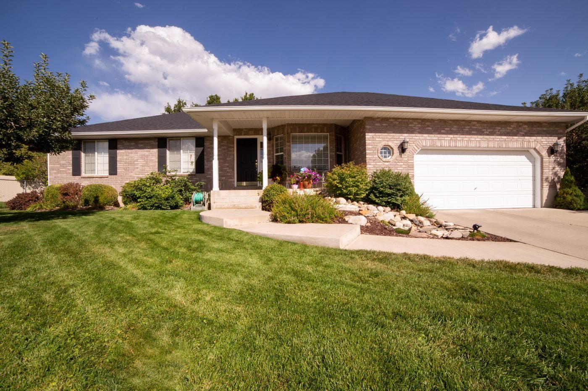

Pass Christian, Mississippi
A locally owned Gulf Coast HVAC company in Pass Christian offering heating and air conditioning and heat pump installation and replacement, with free estimates.
Crosby's Heating and Air is a locally owned and operated HVAC company on the Mississippi Gulf Coast, in business since 2020 per HomeAdvisor. It serves Pass Christian, Carriere, and surrounding areas, with free estimates.

515 Royal Oak, Pass Christian, MS
Monday to Friday 7:00 AM to 7:00 PM; weekend hours not listed